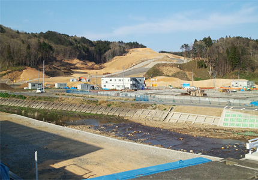

復興は住宅の再建から～
「被災者生活再建支援制度の抜本的拡充を求める署名」にご協力ください
40万人以上が被害を受けた未曾有の東日本大震災から３年半が経過しましたが、いまだに26万人が仮設住宅で不自由な生活を強いられています。防音や断熱、結露などの問題を抱えた応急仮設住宅から、一日も早く人間らしい生活空間、人並みの住宅で暮らせる生活を望んでいます。しかし、震災で財産・職を失った被災者が自力で住宅を再建することは容易ではありません。今ようやく仮設住宅から自宅建設もしくは災害公営住宅への入居が進んできています。これからは「自己資金」のメドが立つか否かがカギになります。「住宅は私有財産であると同時に地域社会を支える社会的存在」であり、住宅再建が進むかどうかが生活再建のカギになります。
この度、東北六県生協連より、「被災者生活再建支援法」の拡充を含めた東日本大震災被災者の実情にあった被災者支援制度の拡充を国に求めていく署名への協力の依頼がありました。埼玉県生協連は、東北六県連の要請を受けて、支援金の最高額の引き上げ、支給対象の拡大、被災された方々の実情にあわせた支援策の検討を求める運動に賛同し、「被災者生活再建支援制度の拡充を求める国会請願署名」への協力を呼びかけます。県内生協組合員の皆様はもとより、多くの皆様のご協力をお願いします。

宮古市田老地区の集団移転工事現場。
住宅が建つのはこれからです（写真：岩手県生協連提供）
署名の請願項目
- 被災者生活再建支援法にもとづく支援金の最高額を、少なくとも500万円に引き上げること。
- 被災者生活再建支援法にもとづく支援金の支給について、半壊を対象に含めるなど支給対象を拡大するとともに、局地的な災害にも対応できるよう支給要件を緩和すること。
- 当該支援金の支給の拡充にあたっては、国の負担割合を引き上げること。
- 自宅再建の難しい被災者に対して、賃貸住宅への入居にかかる負軽減等を含めた総合的な居住確保の支援策を実状にあわせて検討すること。
 「被災者生活再建支援制度の抜本的拡充を求める署名」用紙はこちら（PDF1, 162KB）
「被災者生活再建支援制度の抜本的拡充を求める署名」用紙はこちら（PDF1, 162KB）
署名第1次締切 9月30日
署名第2次締切 11月30日
署名第3次集約 12月26日（金）
【取組団体】
青森県生活協同組合連合会 岩手県生活協同組合連合会 秋田県生活協同組合連合会
宮城県生活協同組合連合会 山形県生活協同組合連合会 福島県生活協同組合連合会
※この件についてのご連絡・お問い合わせは
埼玉県生活協同組合連合会
〒330－0064 さいたま市浦和区岸町7－11－5
電話 048－844－8971 FAX 048－844－8973